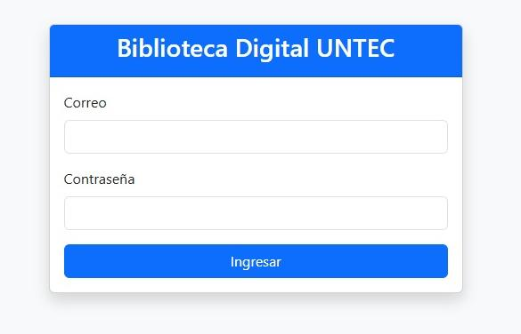
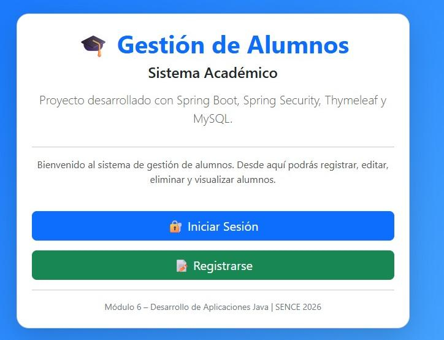

Hola, soy
Bienvenido a mi Portafolio Técnico desarrollado durante el programa Desarrollo de Aplicaciones Full Stack Java Trainee de SENCE. Aquí encontrarás los proyectos, habilidades y tecnologías que he desarrollado durante el curso.
Proyectos Full Stack
Tecnologías Aprendidas
Módulos SENCE
Generación Java Trainee
Soy estudiante del programa Desarrollo de Aplicaciones Full Stack Java Trainee impartido por SENCE y Alkemy. Me apasiona el desarrollo web y el aprendizaje continuo de nuevas tecnologías.
Durante el programa desarrollé aplicaciones Frontend y Backend utilizando HTML, CSS, JavaScript, Java, JSP, Servlets, Spring Boot, MySQL y GitHub.
Crear aplicaciones web modernas utilizando Java, Spring Boot y tecnologías Frontend.
Especializarme en Spring Boot, APIs REST y bases de datos MySQL.
Participar en equipos de desarrollo utilizando metodologías ágiles como Scrum.
Microsoft es una empresa líder mundial en tecnología que desarrolla soluciones de software, nube e inteligencia artificial.
Innovación, inclusión, colaboración, aprendizaje continuo y desarrollo de soluciones para personas y organizaciones.
Azure, GitHub, Microsoft 365, Copilot e Inteligencia Artificial.
Scrum, DevOps y trabajo colaborativo para el desarrollo de software.
Aplicación web desarrollada en HTML, CSS, JavaScript y Bootstrap. Permite simular una billetera digital con inicio de sesión, depósitos, transferencias y visualización de movimientos.

Sistema web para administración de libros y préstamos utilizando Java EE, JSP, Servlets, JDBC, DAO, MVC y MySQL ejecutado en Apache Tomcat.

Proyecto Full Stack Java desarrollado con Spring Boot, Spring MVC, Spring Security, JPA y MySQL para la gestión de alumnos y usuarios.
Billetera Digital JOKO
Desarrollo Frontend con HTML, CSS, JavaScript y Bootstrap.
Biblioteca Digital UNTEC
Java EE, JSP, Servlets, JDBC, DAO y MySQL.
SpringEduManager
Spring Boot, Spring MVC, Spring Security y JPA.
SENCE (2026)
Java EE, JSP, Servlets, JDBC y Spring Boot.
Diseño e implementación de MySQL utilizando JDBC y JPA.
La Biblioteca Digital UNTEC fue el proyecto más desafiante que desarrollé durante el programa Desarrollo de Aplicaciones Full Stack Java Trainee de SENCE y Alkemy. El objetivo fue construir un sistema web para administrar libros, usuarios, préstamos y devoluciones utilizando la arquitectura MVC.
Se necesitaba una aplicación que permitiera registrar información de manera segura, almacenar datos en MySQL y gestionar operaciones CRUD para libros y préstamos.
Este proyecto fortaleció mis conocimientos en desarrollo Backend, conexión con bases de datos, arquitectura MVC y buenas prácticas de programación en Java.